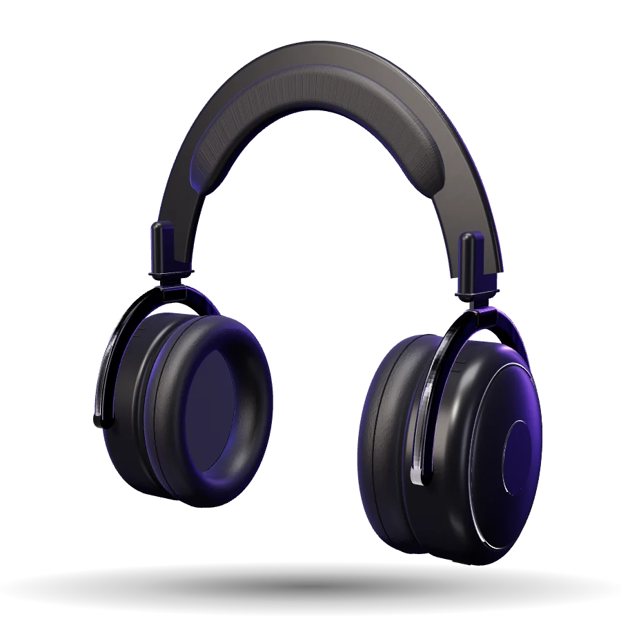

Orbits
Songs like an artist's, mixed with their own hits. A new mix every day.
Pulse
Free and open source · Windows 10 and 11
Pulse is a small, native music player written in Rust. Search any artist, press play, and hear the whole song. No ads, no browser inside, and no account needed.

01Listen
Search any artist and every song plays from start to finish: no previews, no ads between tracks. When your queue runs out, Autoplay keeps going with music like it.
The player here is a copy of Pulse's look, built into this website so you can try it. It really plays: the beat from Pulse's launch video, in your browser. The real Pulse is a Windows app.
prod. jissa · from the Pulse launch video
Press play to load the track (1.8 MB).
02Performance
Pulse can stay open all day next to your games, your browser and your work, and you'll barely notice it's there.
Rough estimates from the developer's PC while playing music. Your numbers will depend on your PC.
03Discover
Search as you type, browse the charts in 27 genres, and open any artist or album. Artist pages show their latest release, their most-played songs, and who their fans also listen to.
Searching for an artist in Pulse, recorded on Windows.Music: "back2back" (prod. jissa). Press the speaker for sound.
04Browse
Cover art everywhere, round artist portraits, and playlists for every mood. Click a song's title to jump to its album, or right-click it to like it, share it, or see who made it.

Every album and single gets its cover, year and artist. Open one to play it in order, or shuffle it.

Follow the artists you like. Their pages show their newest release, top songs and albums, and artists like them.

Popular playlists for every mood, next to your own.
05Made for you
Your home page fills with what you play: quick shortcuts, the albums you keep coming back to, and Orbits, a daily mix built around each of your favorite artists.
Songs like an artist's, mixed with their own hits. A new mix every day.
Paste a link from YouTube, Spotify or SoundCloud and Pulse rebuilds the playlist. Share yours with a one-line code.
Your own covers, search, genre filters, sorting, "date added", and selection with Ctrl and Shift.
06Sound
A six-band equalizer with eight presets. Try it here: these sliders shape the demo track on this page with the same bands and presets as Pulse's equalizer.
Press Play to hear these settings on the demo track.
07Offline and local
Save songs for when you're offline, and play the music files already in your Music folder, right next to everything you stream.
08Made for everyone
09Themes
Five themes come built in, each with a dark and a light version. Some glow softly in the colors of the song that's playing. Try them below, or make your own with a color file, a little CSS and a layout file. Spicetify color schemes work as they are.
10Download
Download the installer, run it, and press play. It installs just for you, adds Pulse to the Start menu, and uninstalls cleanly from Windows Settings.
Windows may show "Windows protected your PC" the first time, as it does for any new app without a paid signing certificate. Click More info, then Run anyway. The first song you play takes a moment longer while Pulse sets up YouTube playback (about 70 MB, once).